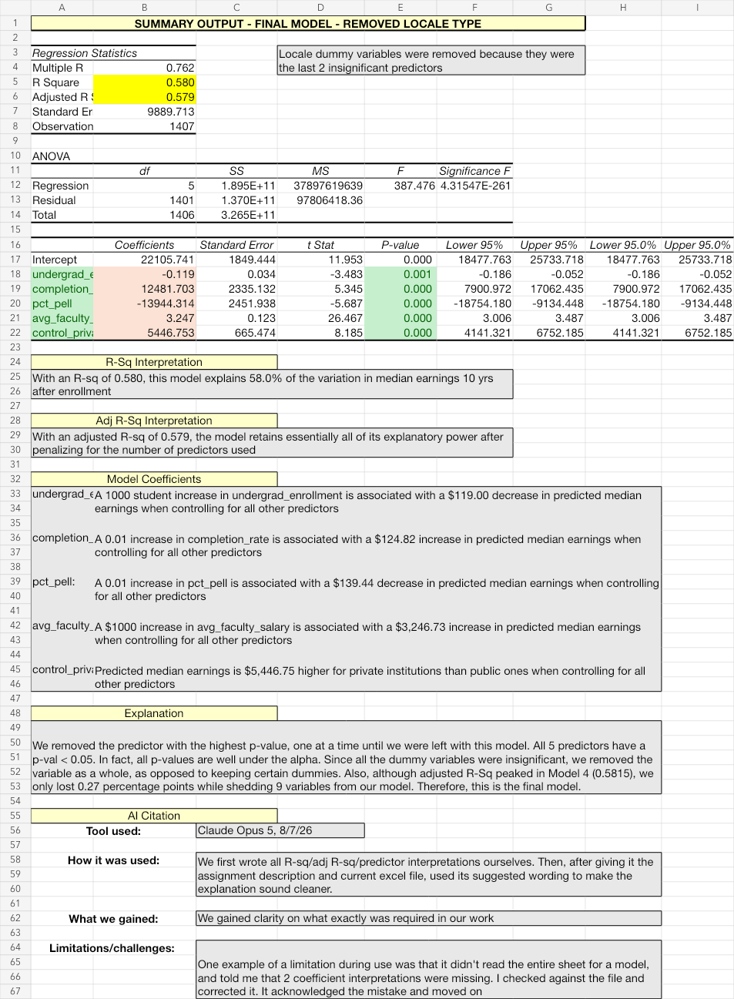
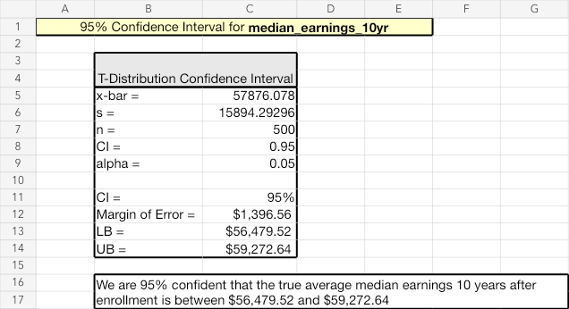
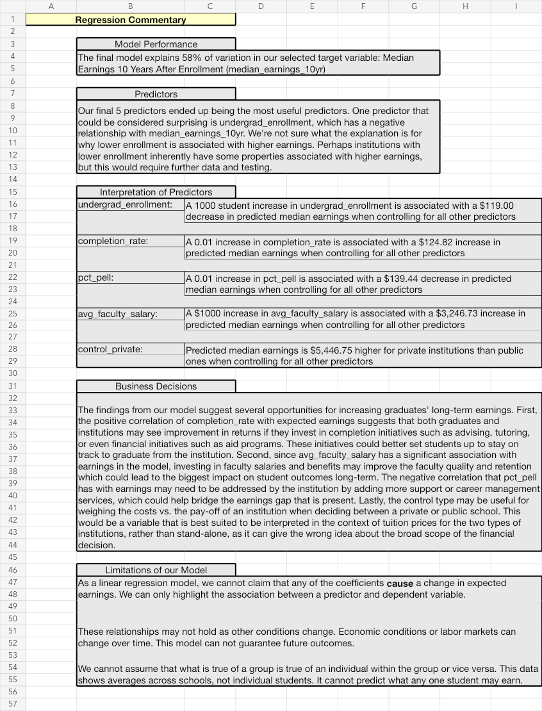

Work with the data
Excel, Python, R, regression, hypothesis testing, and data visualization.
Hybrid Track Portfolio · Winston-Salem, NC
I’m Haoran Zhang, an MSBA candidate at Wake Forest University. My background includes data quality work, audit and financial due diligence, and applied statistics. I’m looking for a Data Analyst role where I can work carefully with the data and explain the results clearly.
Target role: Data AnalystAlso interested in Business, BI, and Financial Analyst roles
Before graduate school, I worked in audit and data quality. Both jobs taught me to check details, follow the evidence, and speak up when something did not look right.
At BDO China, I supported IPO audit procedures and M&A due diligence. At Honghegu, working on projects for Baidu, I moved from bilingual data annotation into quality inspection, data review, and team leadership.
Those experiences are the reason I approach analysis the way I do now: understand where the data came from, choose a method I can explain, and be honest about what the result does and does not show.
Excel, Python, R, regression, hypothesis testing, and data visualization.
Source tracing, quality control, audit testing, and careful review of assumptions.
Plain-language commentary on what the analysis means and how it can inform a decision.
U.S. higher education analytics · Team project
Our team used U.S. Department of Education College Scorecard data to study the relationship between institutional characteristics and median earnings ten years after enrollment.
four-year institutions in a complete, analysis-ready dataset
I wrote the commentary for the project. My part was to explain the output, discuss what it could mean for schools and families, and identify decisions the analysis could support.
The team reduced 6,273 schools and 3,308 original variables to 1,407 four-year institutions and 17 decision-relevant fields, with graduate earnings as the central outcome.
A random sample of 500 institutions supported hypothesis tests and a 95% confidence interval of $56,480–$59,273 for average median earnings ten years after enrollment.
Backward elimination produced a five-predictor model that retained nearly all adjusted explanatory power while removing nine variables.
I connected the results to completion support, faculty investment, career services, and cost-versus-payoff decisions. I also noted that the model shows associations, not proof of cause and effect.



I would not use one coefficient to rank colleges or predict what an individual student will earn. Completion, access, institutional resources, cost, labor-market conditions, and personal choices all matter.
The model is more useful as a starting point for questions and planning. A decision-maker should review the data-quality issues and limitations before using it to compare institutions or allocate resources.
Data source: College ScorecardThe common thread is careful review, clear standards, and reliable work.
Honghegu · Outsourced to Baidu
BDO China Shu Lun Pan CPAs (LLP)
Wake Forest University School of Business
Applied statistics, business analytics, and decision communication.
Miami University
Economic modeling, strategy, statistics, and market analysis.
Strategic economics · Team analysis
Applied endogenous sunk-cost theory to assess how advertising and sponsorship influence product quality, brand value, price-cost margins, market-entry barriers, and economies of scale.
Key insight: incumbent investment advantages can raise minimum efficient scale and strengthen long-run market position.
Open to Data Analyst opportunities